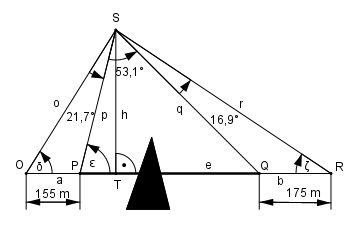
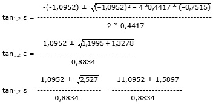

Aufgabe 226 Zwei Punkte P und Q sind durch ein Hindernis getrennt. Um ihre Entfernung e zu bestimmen, verlängert man PQ über P hinaus um 155 mbis O und über Q hinaus um 175 m bis R. Dann misst man von einem Punkt S aus, der außerhalb von PQ liegt die Winkel OSP = 21,7°,PSQ = 53,1° und QSR = 16,9°. Wie groß ist e?

Die Fläche des Dreiecks OPS lässt sich auf 2 Arten berechnen: a * h o * p * sin 21,7° A = ------- = ------------------- | *2 2 2 a * h = o * p * sin 21,7° (1) Ähnliches gilt für das Dreieck QRS: b * h q * r * sin 16,9° A = ------- = ------------------- | *2 2 2 b * h = q * r * sin 16,9° (2) (1) : (2) = a * h o * p * sin 21,7° ------- = --------------------- |*sin 16,9° b * h q * r * sin 16,9° a * sin 16,9° o * p * sin 21,7° --------------- = ------------------ |:sin 21,7° b q * r o * p a * sin 16,9° ------- = ---------------- = q * r b * sin 21,7° 155 m * 0,2907 = ----------------- = 0,6964 (3) 175 m * 0,3697 Im Dreieck PQS: Winkel bei Q = 180° - 53,1° - ε Im Dreieck OPS: Winkel bei P = 180° - ε = 180° - δ – 21,7° |-180° -ε = - δ – 21,7° |+δ δ – ε = -21,7° |+ε δ = ε – 21,7° Im Dreieck QRS: Winkel bei Q = = 180° - (180° - 53,1° - ε) = ε + 53,1° Winkel bei R = = ζ = 180° - (ε + 53,1°) - 16,9° = = 180° - (ε + 53,1° + 16,9°) Im Dreieck OPS: h sin δ = --- | *o o o * sin δ = h |:sin δ h o = ------------------- sin (ε – 21,7°) Im Dreieck PTS: h sin ε = --- | *p p p * sin ε = h |:sin ε h p = ------- sin ε Im Dreieck TQS: sin (180° - (ε + 53,1°)) = sin (ε + 53,1°) h sin (ε + 53,1°) = --- |*q q q * sin (ε + 53,1°) = h | : sin (ε + 53,1°) h q = ----------------- sin (ε + 53,1°) Im Dreieck QRS: sin ζ = sin (180° - (ε + 53,1° + 16,9°)) = = sin (ε + 53,1° + 16,9°) h sin ζ = --- |*r r r * sin ζ = h |:sin ζ h h r = ------ = ------------------------- = sin ζ sin (ε + 53,1° + 16,9°) h = ------------------ sin (ε + 70°) In (3) eingesetzt: h h ------------------- * -------- sin (ε – 21,7°) sin ε -------------------------------------- = 0,6964 h h ------------------ * --------------- sin (ε + 53,1°) sin (ε + 70°) sin (ε + 53,1°) * sin (ε + 70°) ---------------------------------- = 0,6964 sin (ε – 21,7°) * sin ε Umformung: (sin ε * cos 53,1° + cos ε * sin 53,1) ----------------------------------------------- * (sin ε * cos 21,7° - cos ε * sin 21,7°) * sin ε * (sin ε * cos 70° + cos ε * sin 70°) = 0,6964 (sin ε * 0,6004 + cos ε * 0,7997) -------------------------------------------- * (sin ε * 0,9291 - cos ε * 0,3697) * sin ε * (sin ε * 0,342 + cos ε * 0,9397) = 0,6964 Ausmultipliziert: sin2 ε*0,2053 + sin ε*cos ε*0,5642 ------------------------------------------ + sin2 ε * 0,9291 – sin ε * cos ε * 0,3697 sin ε*cos ε*0,2735 + cos2 ε *0,7515 + ------------------------------------- = 0,6964 sin2 ε*0,9291 – sin ε*cos ε*0,3697 sin2 ε*0,2053+sin ε*cos ε*0,8377+cos2 ε*0,7515 ------------------------------------------------ = sin2 ε * 0,9291 – sin ε * cos ε * 0,3697 = 0,6964 |* Nenner sin2 ε*0,2053+sin ε*cos ε *0,8377+cos2 ε*0,7515 = = sin2 ε*0,647 – sin ε *cos ε *0,2575 Gleichung dividiert durch cos2 ε : tan2 ε * 0,2053 + tan ε * 0,8377 + 0,7515 = = tan2 ε * 0,647 – tan ε * 0,2575 |-tan2 ε*0,2053 tan ε * 0,8377 + 0,7515 = = tan2 ε * 0,647 – tan ε * 0,2575 - tan2 ε*0,2053 tan ε * 0,8377 + 0,7515 = tan2 ε * 0,4417 - tan ε * 0,2575 |-tan ε*0,8377 0,7515 = tan2ε*0,4417 - tanε*0,2575 - tanε*0,8377 0,7515 = tan2 ε * 0,4417 - tan ε*1,0952 |-0,7515 tan2 ε * 0,4417 - tan ε * 1,0952 - 0,7515 = 0 ABC – Formel : A = 0,4417, B = -1,0952, C = -0,7515
1,0952 + 1,5897 tan1 ε = ----------------- = 0,8834 = 3,0393 --> ε1 = 71,8° 1,0952 – 1,5897 tan2 ε = ----------------- = -0,5598 0,8834 = --> ε2 = -29,2° Im Dreieck OPS : Fall SWW: a p ----------- = -------- |*sin δ sin 16,9° sin δ a * sin δ 155 m * sin (ε – 21,7°) p = ------------- = ------------------------- = sin 21,7° sin 21,7° 155 m * sin (71,8° - 21,7°) p = ------------------------------- = sin 21,7° 155 m * sin 50,1° = ------------------- = sin 21,7° 155 m * 0,7672 = ----------------- = 321,7 m 0,3697 Im Dreieck OPS: Fall WSW: Sinussatz: e p ----------- = ------------------------ |*sin 53,1° sin 53,1° sin (180° - 53,1° - ε) p * sin 53,1° p*sin53,1° e = ---------------------------- = ------------ = sin (180° - 53,1° - 71,8°) sin 55,1° 321,7 m * 0,7997 e = ------------------ = 313,7 m 0,8202